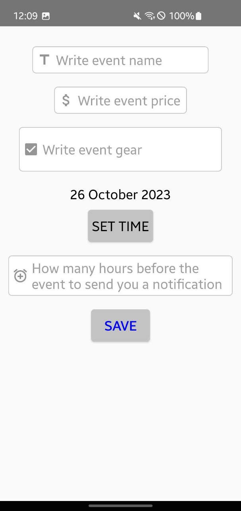
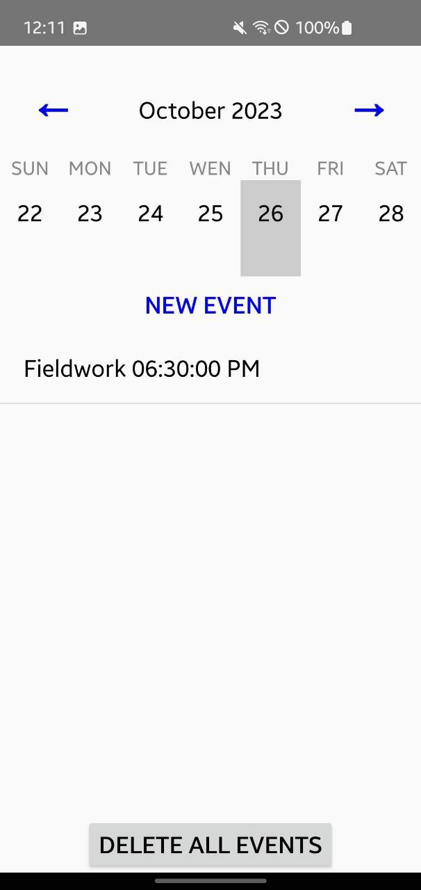
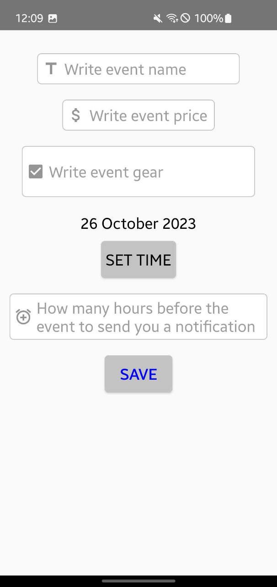
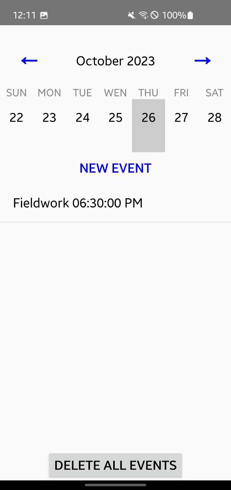

My Time
Android-App | Abschlussprojekt Samsung IT School (2022)
Projektbeschreibung
Willkommen bei My Time, Ihrem persönlichen Zeitmanagement-Assistenten. Diese Android-Anwendung, entwickelt als Abschlussprojekt an der Samsung IT School (2022), soll Ihnen helfen, Ihre Zeit in den Griff zu bekommen, insbesondere wenn Sie Freiberufler oder Selbstständiger sind.
Das Projekt konzentrierte sich auf die Schaffung eines benutzerfreundlichen Werkzeugs zur Organisation von Arbeitsabläufen und zur Steigerung der Produktivität.
Implementierte Funktionen
- Aufgabenverwaltung: Einfaches Erstellen, Organisieren und Verwalten Ihrer Aufgaben und To-Do-Listen. Behalten Sie den Überblick über Ihre Arbeitslast und verpassen Sie keine Fristen.
- Zeiterfassung: Verfolgen Sie, wie Sie Ihre Zeit für verschiedene Aufgaben und Projekte aufwenden, um Einblicke in Ihre Produktivität zu gewinnen.
- Ereignis-/Eintragsverwaltung: Dem Screenshot nach zu urteilen, wurde die Möglichkeit implementiert, Ereignisse unter Angabe von Name, Preis (?), Ausrüstung (?), Datum/Uhrzeit und Benachrichtigungseinstellungen hinzuzufügen.
Technologien
Die Anwendung wurde mit den folgenden Technologien entwickelt:
- Plattform & Sprache:
- Android SDK
- Java
- UI & Komponenten:
- AndroidX Libraries (AppCompat, ConstraintLayout, CardView, RecyclerView)
- Material Components for Android
- Build & Testing:
- Gradle
- JUnit
Links
- Repository auf GitHub
- Google Play Store: (Nicht veröffentlicht. Umfassende Überarbeitung vor Release geplant)
Screenshots
 


